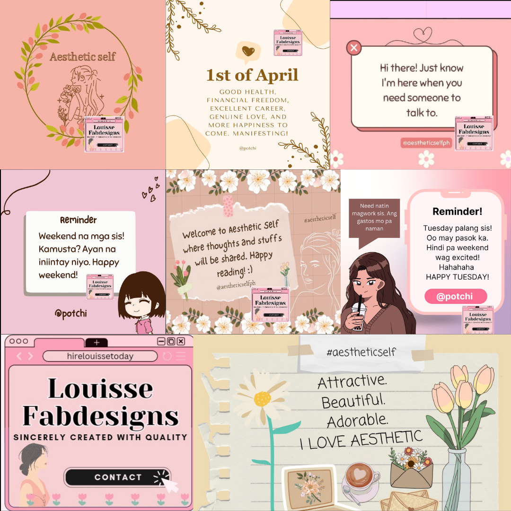
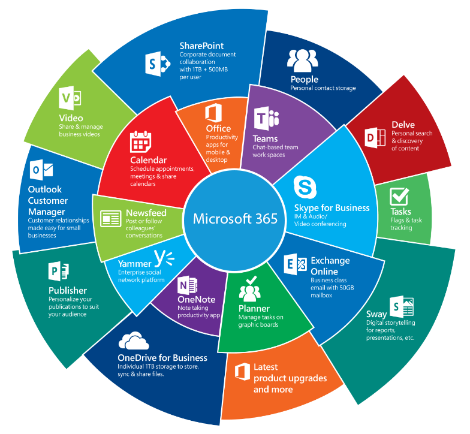
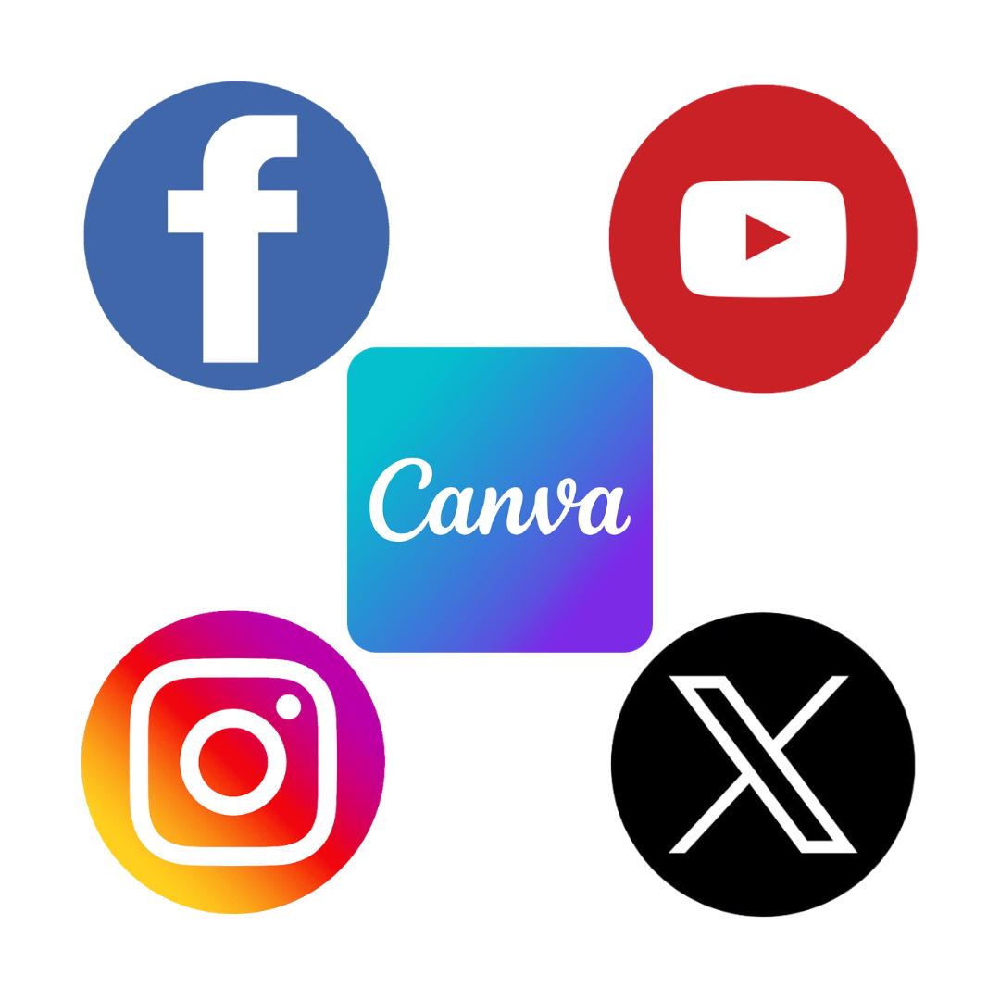

Services
Hi there! Welcome to my website. I'm Louisse, an engineering graduate with proven experience in various industries. I love learning new skills and apply it in every work that I needed to work on. Below are my skills and offered services:
Web Development

Graphic Design

Data Entry

Social Media Management

Customer Service